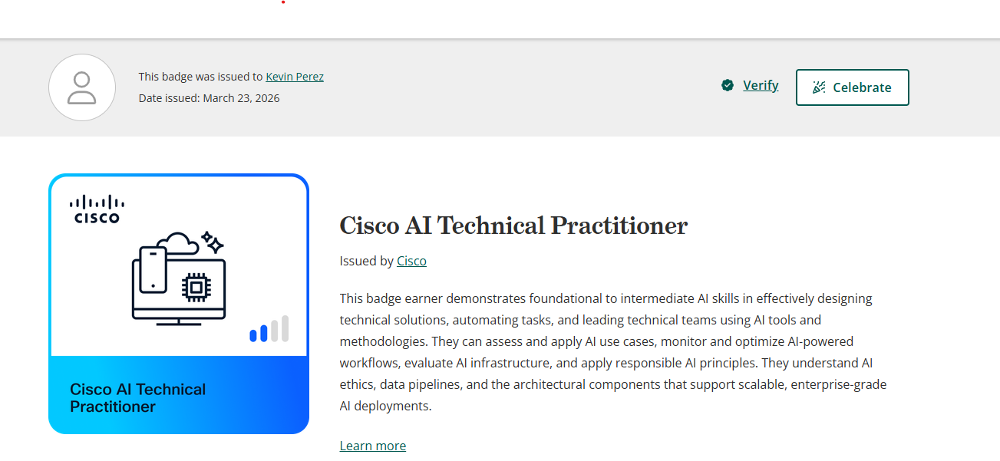
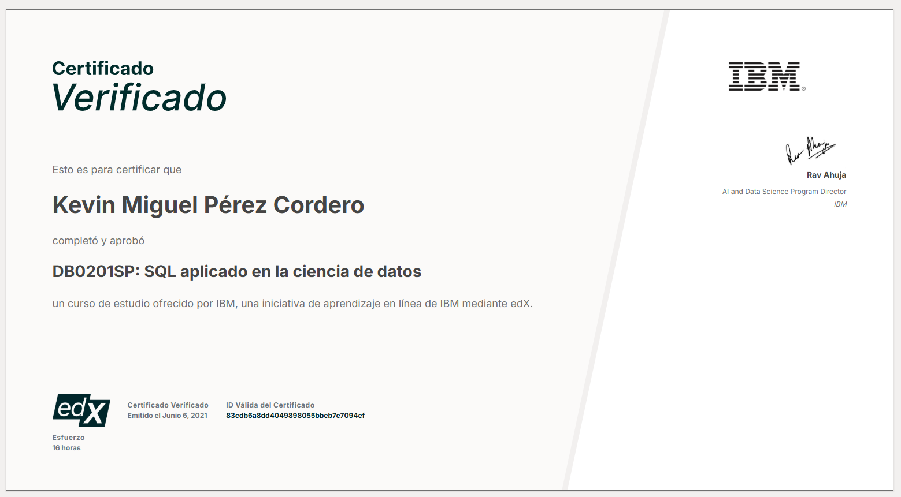
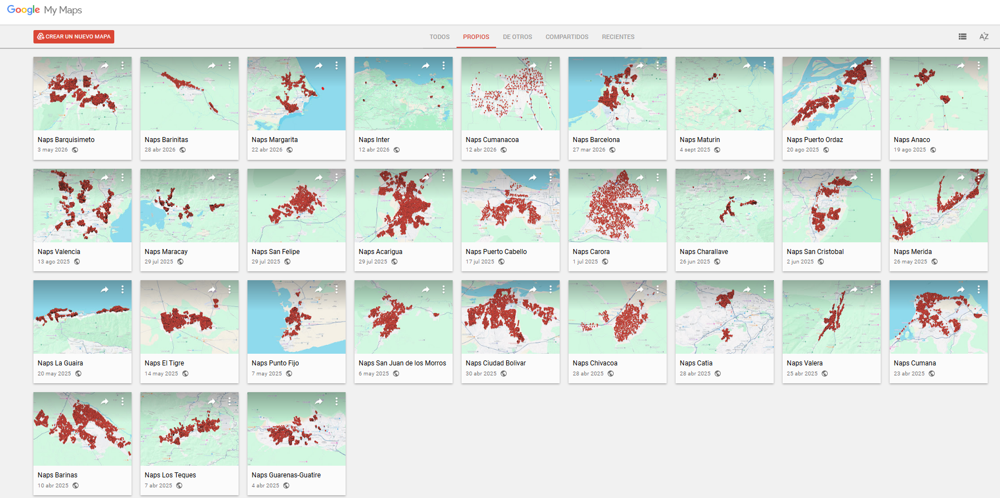

Kevin Miguel Perez Cordero
Ingeniero Electrónico | Redes FTTH | Desarrollo de Software
Más de 3 años de experiencia en diseño de redes FTTH, automatización de procesos y desarrollo de software técnico para operaciones de campo.
Experiencia
-
Ingeniero de Proyectos — Redes FTTH
Corporación Telemic (Inter), Barquisimeto (2022 - Presente) - Desarrollo de matrices de fusión, auditorías y documentación técnica para optimizar tiempos y operación.
Habilidades
- Redes FTTH, diseño y cálculo de materiales
- Python, C#, .NET, Flutter
- AutoCAD, ArcGIS, Google Earth
- MySQL, SQL Server, MariaDB
- Cisco AI Technical Practitioner
Extras


Aportes
Imágenes



1 / 8
Mapas
1 / 3
Imagen pendiente
Generador de matrices para documentación técnica de red.